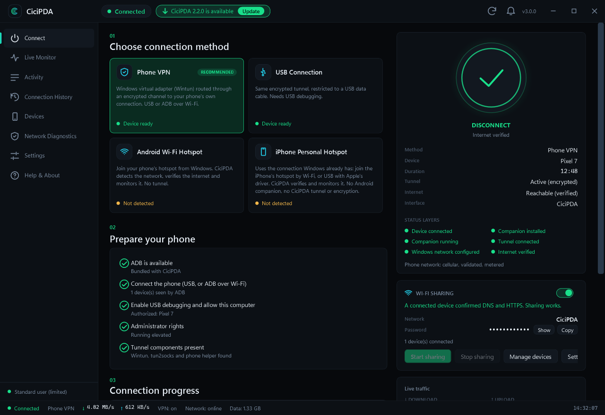
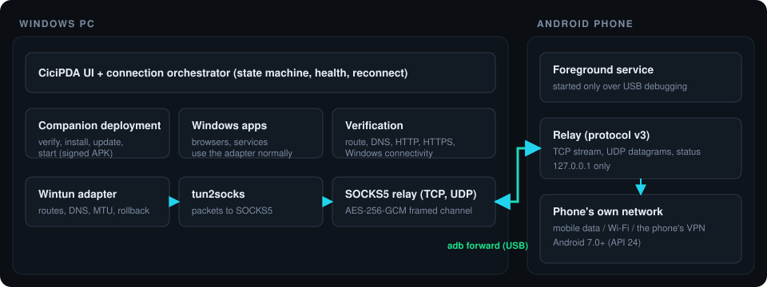
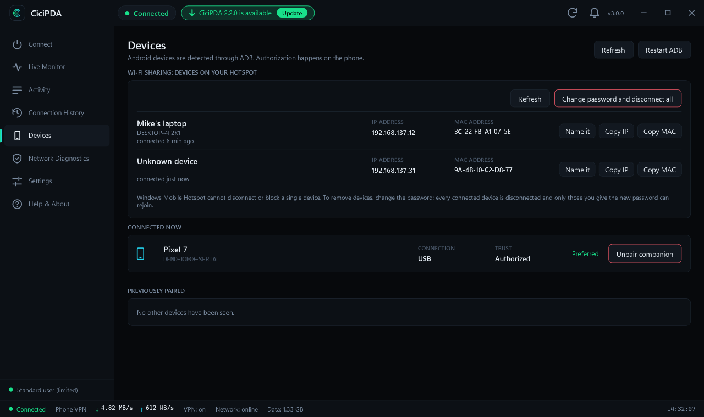
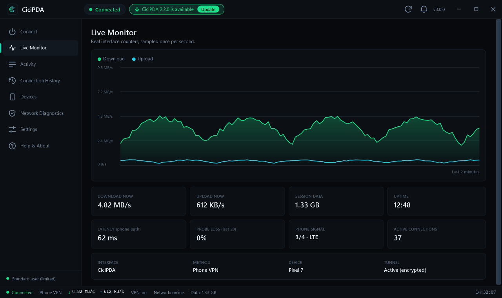
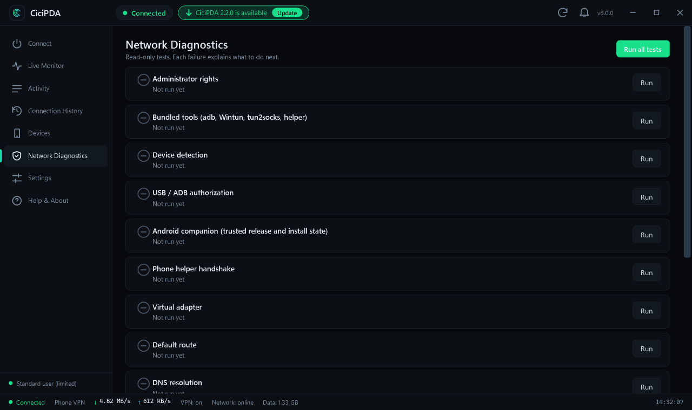
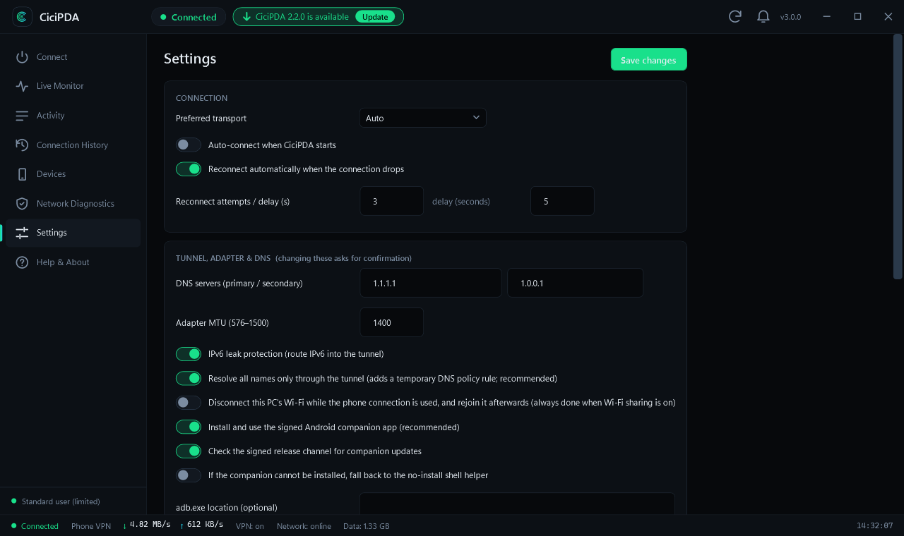

Truthfully connected
"Connected" appears only after local, DNS, HTTP and HTTPS checks pass through the phone. If something fails, you get the exact layer that broke.
by CiciByte Technology, Inc.
CiciPDA turns your Android phone's connection into a verified, encrypted internet link for your PC — over USB or Wi-Fi — and can share it onward as a Wi-Fi hotspot. No manual setup, no root.

How it works
Connect your Android phone by USB (or ADB over Wi-Fi) and allow USB debugging once.
CiciPDA installs its signed companion app, opens an encrypted channel and creates a virtual network adapter on Windows.
The connection is verified before it's called connected. Optionally share it to other devices as a Wi-Fi hotspot.

Features
"Connected" appears only after local, DNS, HTTP and HTTPS checks pass through the phone. If something fails, you get the exact layer that broke.
Bundled ADB, Wintun and packet engine. The Android companion installs itself and is verified against a pinned signing certificate.
Share the phone's internet to other devices through Windows Mobile Hotspot. See every device that joined — name, IP, MAC — give them names, and rotate the password to disconnect everyone.
If your PC is on Wi-Fi, CiciPDA releases it while the phone link is used and rejoins afterwards — even after a crash or restart.
Closing the window while connected hides CiciPDA to the system tray so the connection keeps running. The window remembers where you left it.
Every network change is journaled and rolled back on disconnect, crash or reboot. Diagnostics, live traffic and history are built in.
Phone VPN and USB modes for Android; Android hotspot and iPhone Personal Hotspot detected, verified and monitored.
Updates are signed, checked against a pinned key and always ask before installing. Never a surprise.
Inside the app




Security
The tunnel is encrypted end to end with AES-256-GCM using a key that exists only for the session. There is no CiciPDA server: nothing is routed through us, and nothing is collected.
Download
Windows 10 / 11, 64-bit. Installs to Program Files\CiciByte\CiciPDA, with Start menu and desktop shortcuts.
Not available yet.
PlannedNot available yet.
PlannedThe installer is not yet Authenticode-signed, so Windows SmartScreen may show a warning on first run. Its SHA-256 is published with each release and the app verifies its own updates with a pinned key. All releases
FAQ
No. It uses USB debugging (ADB) and a small companion app that Android lets you install normally.
Yes. CiciPDA is free and open source under the MIT licence. If it helps you, you can buy the developer a coffee.
For iPhone, CiciPDA detects, verifies and monitors the Personal Hotspot connection Windows already has. There is no CiciPDA tunnel or companion on iOS.
CiciPDA uses your phone's normal connection and does not disguise tethering. Your plan's tethering terms still apply — check them with your carrier.
Network changes are written to a recovery journal first. On the next start (or Disconnect), routes, DNS rules, the virtual adapter and your Wi-Fi connection are restored.
It has been confirmed working on a real Android phone and Windows PC, and ships with an automated test suite. A systematic test across more Windows versions and phone brands is still in progress — please report issues.